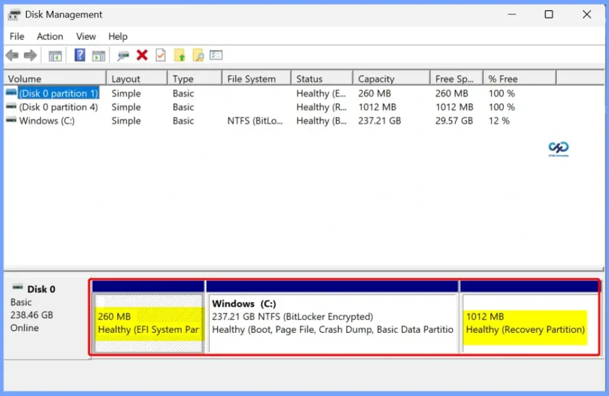

Key Takeaways
- Windows 11 25H2 Upgrade Failure – Some devices fail to upgrade to Windows 11 25H2 because the EFI System Partition (ESP) has insufficient space.
- Error 0x800F0922 – The upgrade may display “We couldn’t update the system reserved partition” along with error 0x800F0922.
- 100 MB EFI Partition Issue – Older PCs with a 100 MB ESP are more likely to encounter this problem.
- Boot Files Need Space – Windows Setup needs sufficient free space in the ESP to update and stage important boot files during the upgrade.
- Pre-Upgrade Detection Is Important – Administrators should check ESP size and available free space before deploying Windows 11 25H2 across managed devices.
Windows 11 25H2 Upgrade Fails with Error 0x800F0922 Due to Insufficient EFI Partition Space! Windows 11 25H2 upgrades can fail with Error 0x800F0922 and the message “We couldn’t update the system reserved partition” when the device has an EFI System Partition (ESP) with insufficient space. This is particularly common on older systems with a 100 MB EFI partition, where Windows Setup may not have enough space to update and stage the required boot files.
Table of Content
Windows 11 25H2 Upgrade Fails with Error 0x800F0922 Due to Insufficient EFI Partition Space
For IT administrators, this can become a problem during large-scale Windows 11 25H2 deployments. Checking the ESP size and available free space before upgrading can help identify affected devices early and prevent upgrade failures.

Windows 11 25H2 EFI Partition Troubleshooting
To troubleshoot the Windows 11 25H2 upgrade failure, first check the EFI System Partition (ESP) size and available free space. The table below shows more details.
| Step | Action |
|---|---|
| Check ESP | Check the EFI System Partition size – Identify if it is only 100 MB |
| Check Free Space | Check available space in the ESP – Ensure sufficient free space for the upgrade |
| Check Error | Look for 0x800F0922 / 0xC1900104 – Confirm the upgrade failure is related to the system/EFI partition |
| Check BitLocker | Verify whether BitLocker is enabled – Keep the recovery key available and suspend protection before partition changes |
| Clean ESP | Remove only known unnecessary files – Do not delete essential EFI/boot files |
| Increase ESP Size | If 100 MB is insufficient – Carefully resize the ESP using a tested and supported procedure |
| Restart & Retry | Reboot after remediation – Retry the Windows 11 25H2 feature update |
| Enterprise Check | Check other managed devices – Detect small ESPs before deploying 25H2 broadly |
Need Further Assistance or Have Technical Questions?
Join the LinkedIn Page and Telegram group to get the latest step-by-step guides and news updates. Join our Meetup Page to participate in User group meetings. Also, join the WhatsApp Community and the Whatsapp channel to get the latest news on Microsoft Technologies. We are there on Reddit as well.
Author
Anoop C Nair is Workplace Technology solution architect with 25+ years of experience in global enterprise organizations such as JP Morgan, Capgemini, etc. He is Microsoft Certified Trainer. Microsoft MVP from 2015 onwards for consecutive 11 years! He also conducts Intune and modern workplace tech training for enterprise organizations. He is Blogger, Speaker, and Founder of HTMD Community and HTMD Conference. His focus is on Device Management technologies such as Intune, Windows, Cloud PC. He writes about technologies like Intune, SCCM, Windows, Cloud PC, Windows, Entra, Microsoft Security.